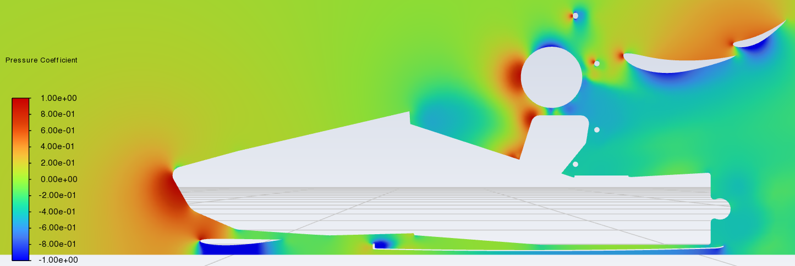
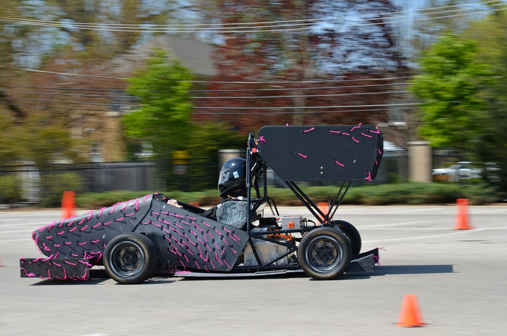
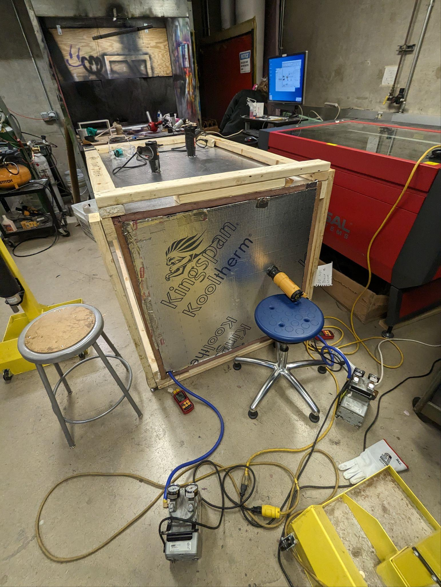

Mechanical Engineering | Advanced Manufacturing | CAD/CAM | Mechatronics | Machine Learning | Aerodynamics
Developed skills specializing in full-car 3D Ansys Fluent CFD simulation, Siemens NX CAM 3-axis CNC manufacturing, mechatronics control, and PyTorch deep learning for vehicle dynamics.
Re-engineered contact force measurement prototypes in SolidWorks CAD, integrated load cells with MTS controllers, and conducted high-temperature extensometer evaluations.
Redesigned hydraulic cylinder priming procedures to save 62.5% assembly time (from 2 hrs to 45 mins), developed P&ID schematics, BOMs, and assisted with Factory Acceptance Testing (FAT).
Led an 8-person engineering team designing and validating a complete aerodynamics package for the 2025 Formula Student car. Performed 100+ hours of 3D Ansys Fluent CFD simulations across pitch, roll, and yaw angles, optimized carbon fiber curing to cut lead time by 25%, and secured $15,000 in team sponsorship.



Designed a custom aluminum mold for a plastic component in Siemens NX adhering to injection molding draft and shrinkage specifications. Programmed G-code CAM toolpaths and machined core/cavity plates on a Haas Mini Mill 2 CNC.
Engineered a PyTorch Multi-Layer Perceptron (MLP) trained on 210,000+ experimental tire test samples to predict lateral force from 14 operating variables. Achieved 97.8% prediction accuracy (R² = 0.9776), surpassing traditional Pacejka empirical models.
Interested in discussing automotive engineering, CFD aerodynamics, CAD/CAM manufacturing, or mechatronics opportunities?